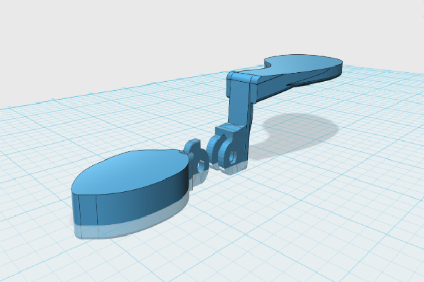

I'm a senior at Tufts University studying Mechanical and Biomedical Engineering. I have worked on a range of projects, from molding and casting prosthetics, to building soft-robot prototypes for natural disaster relief, to making an assistive device for a boy with ectrodactyly. I love to create innovative products that enhance the daily lives of individuals, strengthen human resilience to injury, or combat climate change. Learn more:
ResumeModeled a kitchen tool, ball valve, gear box, and encoder mounting system.
Represented an automated production process for annealing sheet metal. Took and analyzed data sets.
Simulated movement of the Manduca worm using a second-order differential equation. Utilized heuristic methods in problem solving.
Decrypted encrypted files using a cipher. Created several different games.
Created an assistive device for a boy with ectrodactyly, educational toys for children, rotary encoders, mounting devices, and prototypes for several fabrication classes.
Fabricated 3D prototypes, gears for encoders, and various designs.
Developed prosthetic sockets and other prototypes.
Integrated a rotary encoder that I built into a system with an electromagnetic motor and clutch array.
 In Dr. Barry Trimmer’s Neuromechanics and Biomimetics Lab at Tufts.
I fabricated a soft robot prototype for natural disaster relief using an electromagnetic motor and clutch-array system.
Through testing several different types of rotary encoders using an Arduino, I maximized efficiency and accuracy in the prototype.
I created a precise CAD model of the robot with SolidWorks.
In Dr. Barry Trimmer’s Neuromechanics and Biomimetics Lab at Tufts.
I fabricated a soft robot prototype for natural disaster relief using an electromagnetic motor and clutch-array system.
Through testing several different types of rotary encoders using an Arduino, I maximized efficiency and accuracy in the prototype.
I created a precise CAD model of the robot with SolidWorks.
 Transforming an educational staple into an engaging modern solution
for every child! This project takes a "make your own track for marbles," and combines it with a piggy bank
to make a transformable toy that can live on a magnetic refrigerator or wall. It contains a sleek
track with several different 3D printed shaped pieces with press-fitted magnets on the back that can create
as many track designs as can be imagined. There are multiple color choices for a laser cut transparent
bank to make the toy a compact self-storing design. Saving has never been more exciting!
Transforming an educational staple into an engaging modern solution
for every child! This project takes a "make your own track for marbles," and combines it with a piggy bank
to make a transformable toy that can live on a magnetic refrigerator or wall. It contains a sleek
track with several different 3D printed shaped pieces with press-fitted magnets on the back that can create
as many track designs as can be imagined. There are multiple color choices for a laser cut transparent
bank to make the toy a compact self-storing design. Saving has never been more exciting!
 Allen is a seventh grade boy with ectrodactyly, or cleft-hand. He is an avid hockey player, but due to his hand's condition, he struggles with holding his hockey stick. In my Biomedical Engineering Design Process class, my classmates and I created Iron Hand, an assistive device to help Allen improve his grip for hockey and increase the use of his hand in daily life. Through brainstorming and iteration, we came up with a power paddle hand that could be 3D printed and easily strapped on his arm. We worked closely with Allen to test and create multiple iterations of our prototype to best meet his needs.
 After conducting user needs surveys and receiving user experience data about kitchen tools,
my group in Mechanical Design and Fabrication discovered that there was a need for a device that could transport food, but not take up too much space in a backpack once a student's lunch was over.
Through background research on other products and comparisons, my group found that there was a gap in the market between flimsy ziplock
bags and hard containers. We set out to produce multi-volumetric and collapsible Tupperware. We created a device that had a hard structure, but a soft interior so that one could easily collapse the Tupperware
container while ensuring that the food inside wasn't compressed by other objects in the bag. The final product was fabricated on an industrial
3D printer and assembled using hand tools.
After conducting user needs surveys and receiving user experience data about kitchen tools,
my group in Mechanical Design and Fabrication discovered that there was a need for a device that could transport food, but not take up too much space in a backpack once a student's lunch was over.
Through background research on other products and comparisons, my group found that there was a gap in the market between flimsy ziplock
bags and hard containers. We set out to produce multi-volumetric and collapsible Tupperware. We created a device that had a hard structure, but a soft interior so that one could easily collapse the Tupperware
container while ensuring that the food inside wasn't compressed by other objects in the bag. The final product was fabricated on an industrial
3D printer and assembled using hand tools.